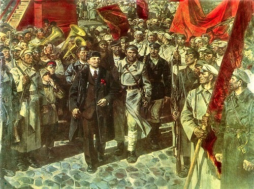
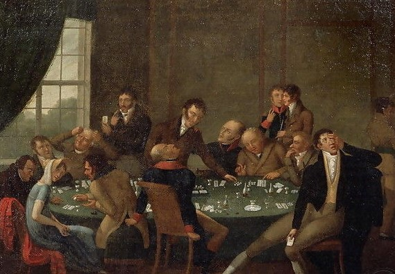

| Viața Literară | Prima lucrare publicată de Dostoievski a fost o traducere destul de liberă și intensificată emoțional a romanului Eugénie Grandet al lui Honoré de Balzac; iar opera scriitorului francez avea să exercite o mare influență asupra propriei sale ficțiuni. Dostoievski nu a rămas multă vreme în obscuritate. De îndată ce a scris prima sa nuvelă, „Oameni sărmani”, a fost salutat drept marele talent nou al literaturii ruse de către cel mai influent critic al vremii sale, „furiosul” Vissarion Belinsky.
|
|  | La întoarcerea sa în Rusia, Dostoievski s-a cufundat în activitatea literară. Împreună cu fratele său Mihail, a editat două reviste influente, mai întâi Vremya (1863; „Timp”), care a fost închisă de guvern din cauza unui articol inacceptabil, și apoi Epokha (1864; „Epoca”), care s-a prăbușit după moartea lui Mihail. După ce a încercat mai întâi să mențină o poziție neutră, Dostoievski a început să atace radicalii, care defineau practic inteligența rusă. Dostoievski a fost respins de materialismul lor, de moralitatea lor utilitara, de reducerea artei la propagandă și, mai presus de toate, de negarea libertății și responsabilității individuale. Pentru restul vieții, el și-a menținut un sentiment profund al pericolului ideilor radicale, așa că lucrările sale post-siberiene au ajuns să fie respinse de bolșevici și susținute de regimul sovietic. |
|  | Din mai multe motive, Dostoievski a petrecut o mare parte din anii 1860 în Europa de Vest: a vrut să vadă societatea pe care o admira atât pentru cultura ei, deși o deplângea pentru materialismul ei. Acesta scapă de creditorii săi din Rusia, fiindt atras dezastruos de jocurile de noroc. Un editor lipsit de scrupule i-a oferit un avans extrem de necesar, cu condiția să livreze un roman până la o anumită dată; editorul conta pe prevederile de confiscare, care i-ar permite nouă ani să publice toate lucrările lui Dostoievski gratuit. Cu mai puțin de o lună rămasă, Dostoievski a angajat un stenograf și și-a dictat romanul Igrok (1866; Jucătorul) pe baza psihologiei jocurilor de noroc compulsive pe care l-a terminat la timp. |